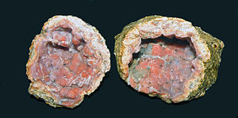

A geode is a geological secondary formation within sedimentary and volcanic rocks. Geodes are hollow, vaguely spherical rocks, in which masses of mineral matter (which may include crystals) are secluded. The crystals are formed by the filling of vesicles in volcanic and subvolcanic rocks by minerals deposited from hydrothermal fluids; or by the dissolution of syn-genetic concretions and partial filling by the same or other minerals precipitated from water, groundwater, or hydrothermal fluids.
